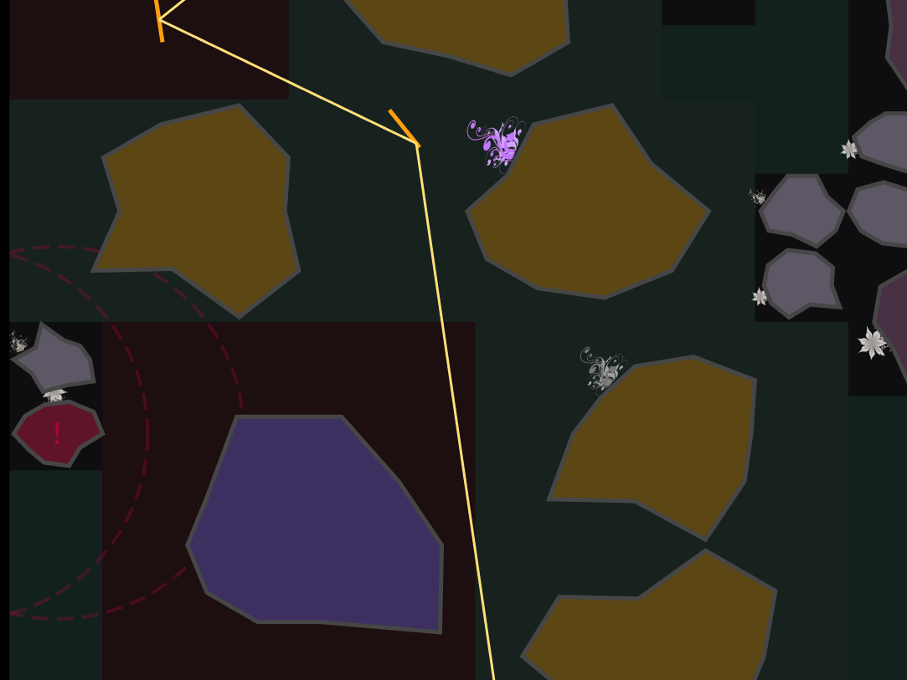

Light Strider, July 2021
This is a team project, a web game written in ELM. You are going to direct light beams through obstacles, using mirrors and light splitters. This game uses randomness and graph algorithms extensively. Try it. It's fun!
Light Strider China May Day Mathematical Contest in Modeling Project, May 2022
I led a team to build a gray comprehensive evaluation model and a neural network prediction model with Softmax classifier in Python and Matlab, based on a dataset of a city’s fire alarm systems (various sensors’ false alarm rates). We evaluated fire alarm systems of different districts in the city, and predicted the credibility of fire alarm signals. Our paper won the first prize of 2022 China May Day Mathematical Contest in Modeling.
Class Projects
- Tennis Ball Collector, Umich EECS373 Embedded System Design, April 2023
-
This is a four-people class project. We designed an automated robot for tennis ball collection. We went through rigorous design and testing phases, and made a robust, fully-functioning product. In this project, I was mainly responsible for system design and integration. I designed and implemented the finite state machine, specifically state encoding, state transitions based on external input (buttons and sensors) and overall flow of code. I wrote motor control driver, and worked on the H-bridge connection. I also implemented interrupt, timer capture and compare function for IR sensor, ultrasonic sensor and motor control.

- Multi-threaded programming, Umich EECS482, Feburary 2023
- I implemented a CPU scheduler based on shortest-seek-time-first (SSTF) scheduling policy in C++. This multithreaded project was implemented using monitors.
- Thread library, Umich EECS482, Feburary 2023
- I implemented library functions in C++ for multithreaded program like thread monitors (mutex, conditional variable), thread yield, and thread interrupt.
- External pager, Umich EECS482, March 2023
- I implemented a pager which manages virtual memory for application processes in C++. The pager could handle address space creation, read and write faults, address space destruction, and simple argument passing between address spaces.
- Network file server, Umich EECS482, April 2023
- I implemented a multi-threaded, secure network file server in C++ based on unix file system structure and socket programming and client-server system primitives.
- Rescue the Countess, Umich EECS281 Data Structures and Algorithm, Sep 2022
- I implemented Depth First Search and Breadth First Search algorithms to guide Marco of the Fungus Province, helping him rescue Countess Cherry captive in a dark, maze-like castle, using C++.
- The Walking Deadline, Umich EECS281 Data Structures and Algorithm, Oct 2022
- I implemented a zoombie shooting game based on a Priority Queue container, using C++.
- SillyQL, Umich EECS281 Data Structures and Algorithm, Nov 2022
- I wrote a C++ program to simulate a basic relational database with an interface based on a subset of a standard query language in C++, using Hash Table and Binary Search Tree.
- among-us, Umich EECS281 Data Structures and Algorithm, Dec 2022
- I implemented a C++ program to calculate a Minimum Spanning Tree using Prim algorithm, approximate a solution to the Travelling Salesperson Problem using heuristics, and calculate an optimal solution to the problem using a branch and bound algorithm.